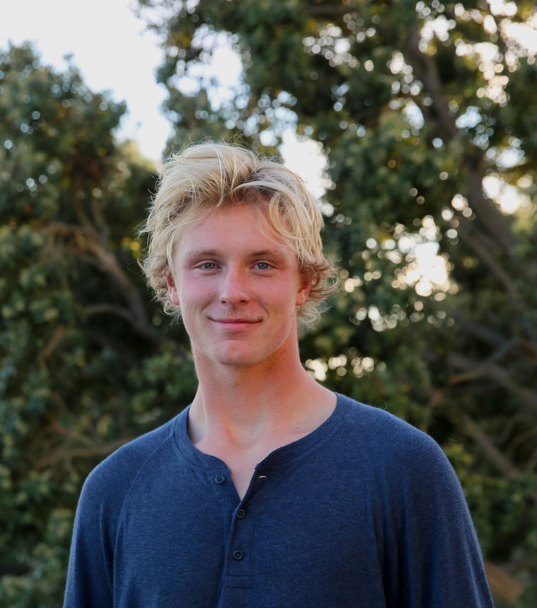
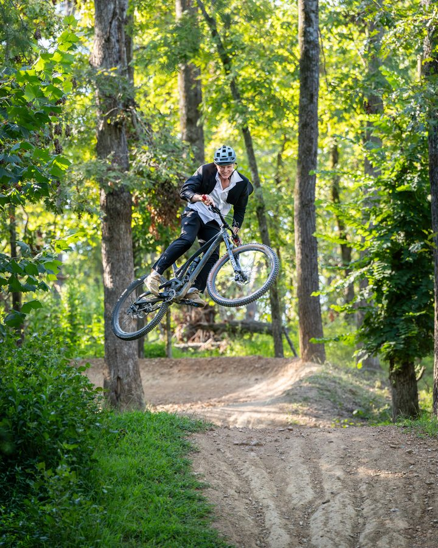
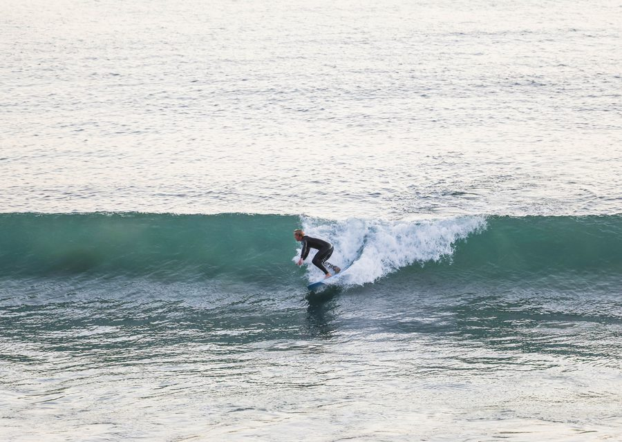
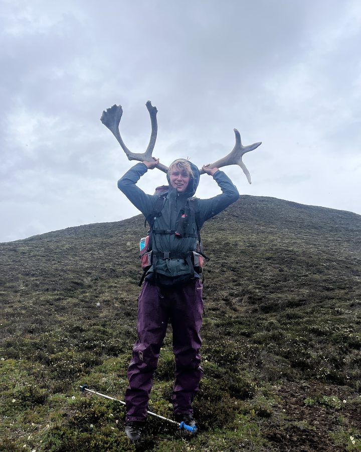

I build AI systems that take over the boring work people do, so they have more time for each other. I’m most interested in personal AGI tools that help people directly.
An AI introspection platform that learns how people think and live, then turns that into a plan for what they actually want. I architected a 4-stage Claude reasoning pipeline that turns a voice or text intake into a sequenced goal plan, a real-time voice interview steered by a gap engine that finds missing context, a weekly Pattern Engine that mines behavior logs with code-verified evidence to block fabrication, and Vent, a reflection space that distills sessions into mood, themes, and patterns.
yeahme.app →Led the initiative to make the venture studio AI-native. Built shared agent infrastructure on a central knowledge base (PostgreSQL + pgvector), then built and deployed six agents in Slack for the partners: morning brief, daily market reports, on-demand research, market intelligence, content, and SDR lead generation. The SDR agent shipped in two weeks and pulled 200+ qualified leads through Apollo into HubSpot. Also built the go-to-market strategy for portfolio company Clinary, including rural health funding research on the $93.6M PACT program and Baptist Health targeting, plus a CRM and account-strategy tool with AI analysis.
I teach businesses and individuals how to prompt and which AI tools to use for which tasks, through workshops across Northwest Arkansas. I also build custom software and AI-generated video for clients.
Selected for the first cohort of Pepperdine’s Waves Innovation Accelerator from 100+ student applicants.
Most people can’t write their own AI personalization instructions, but they can fill out a survey. A 15-minute questionnaire generates custom, platform-specific instructions for ChatGPT, Claude, Gemini, and Perplexity.
personabuilder.live →Built early AI agents on GPT-3.5 and GPT-4 for instructors and students, including recommendation-letter and resume-builder tools.
Picked through interview as one of three for the VFE competition. Built the brand and site, scraped every vendor in NWA, then cold-reached 50+ companies to sign corporate teams for a charity golf tournament.
Designed a personal-finance app with a team that turns spending habits into clear, interactive graphs. Awarded a $1,000 scholarship.
Designed “Mullet TTR,” a trail-trimming robot to cut the labor and insurance costs of trail maintenance, using GPT-4o and DALL·E 2 when image prompts had to be obsessively precise. That trial and error became my prompt-engineering foundation. The project earned a research invite to Edinburgh Napier, where I studied trail systems across the Scottish Borders and helped build systems to monitor handlebar vibration data.
Early access to Google’s Veo 2 in Feb 2025. Started with logo-driven graphics, moved to fully generated video and audio with Veo 3, and built the prompt techniques for AI video while producing social content for several companies.
Led social media for NWACC’s Trail and Bike Tech programs. Filmed, edited, and posted content, and ran AI-generated video, which drove the best engagement on the account.
My love for technology started in the backcountry. In June 2022 I spent 30 days backpacking across Alaska with NOLS, carrying only what we could fit in our packs and split between us. Every tool got used to its limit — and it was obvious that making any one of them a little better would make life out there a little easier. That stuck with me. Five months later ChatGPT launched, and I’ve been building with AI ever since. It’s the same instinct: take the tools we live by and make them better.
I still spend as much time outside as I can — surfing, mountain biking, climbing, and backpacking. It’s where I think best.
Pepperdine Surf Team · Alpha Tau Omega · Varsity Basketball Captain, Bentonville HS


